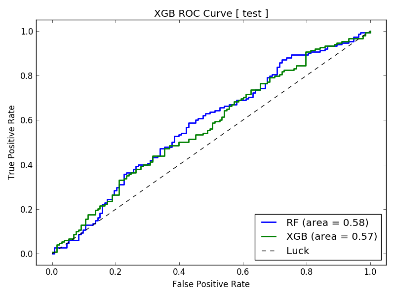

NCAA Basketball Tutorial
SportFlow Running Time: Approximately 15 minutes
{kind=link}
In this tutorial, we use machine learning to predict whether or not an NCAA Men’s Basketball team will cover the spread. The spread is set by Las Vegas bookmakers to balance the betting; it is a way of giving points to the underdog to encourage bets on both sides.
SportFlow starts with the basic data and derives time series features based on streaks and runs (not the baseball runs). In the table below, the game data includes both line and over_under information consolidated from various sports Web sites. For example, a line of -9 means the home team is favored by 9 points. A line of +3 means the away team is favored by 3 points; the line is always relative to the home team. An over_under is the predicted total score for the game, with a bet being placed on whether not the final total will be under or over that amount.
season |
date |
away.team |
away.score |
home.team |
home.score |
line |
over_under |
2015 |
2015-11-13 |
COLO |
62 |
ISU |
68 |
-10 |
151 |
2015 |
2015-11-13 |
SDAK |
69 |
WRST |
77 |
-6.5 |
136 |
2015 |
2015-11-13 |
WAG |
57 |
SJU |
66 |
-5.5 |
142 |
2015 |
2015-11-13 |
JVST |
83 |
CMU |
89 |
-18 |
142.5 |
2015 |
2015-11-13 |
NIAG |
50 |
ODU |
67 |
-18 |
132 |
2015 |
2015-11-13 |
ALBY |
65 |
UK |
78 |
-20 |
132.5 |
2015 |
2015-11-13 |
TEM |
67 |
UNC |
91 |
-9.5 |
145 |
2015 |
2015-11-13 |
NKU |
61 |
WVU |
107 |
-23.5 |
147.5 |
2015 |
2015-11-13 |
SIE |
74 |
DUKE |
92 |
-24 |
155 |
2015 |
2015-11-13 |
WCU |
72 |
CIN |
97 |
-20 |
132 |
2015 |
2015-11-13 |
MSM |
56 |
MD |
80 |
-21.5 |
140 |
2015 |
2015-11-13 |
CHAT |
92 |
UGA |
90 |
-10.5 |
136 |
2015 |
2015-11-13 |
SEMO |
53 |
DAY |
84 |
-19 |
140 |
2015 |
2015-11-13 |
DART |
67 |
HALL |
84 |
-11 |
136 |
2015 |
2015-11-13 |
CAN |
85 |
HOF |
96 |
-10.5 |
150.5 |
2015 |
2015-11-13 |
JMU |
87 |
RICH |
75 |
-9 |
137.5 |
2015 |
2015-11-13 |
EIU |
49 |
IND |
88 |
-25 |
150 |
2015 |
2015-11-13 |
FAU |
55 |
MSU |
82 |
-23.5 |
141 |
2015 |
2015-11-13 |
SAM |
45 |
LOU |
86 |
-23 |
142 |
2015 |
2015-11-13 |
MIOH |
72 |
XAV |
81 |
-15.5 |
144.5 |
2015 |
2015-11-13 |
PRIN |
64 |
RID |
56 |
1 |
137 |
2015 |
2015-11-13 |
IUPU |
72 |
INST |
70 |
-8 |
135.5 |
2015 |
2015-11-13 |
SAC |
66 |
ASU |
63 |
-18 |
144 |
2015 |
2015-11-13 |
AFA |
75 |
SIU |
77 |
-5.5 |
131 |
2015 |
2015-11-13 |
UNCO |
72 |
KU |
109 |
-29 |
147.5 |
2015 |
2015-11-13 |
BALL |
53 |
BRAD |
54 |
3 |
135 |
2015 |
2015-11-13 |
USD |
45 |
USC |
83 |
-12.5 |
140 |
2015 |
2015-11-13 |
UTM |
57 |
OKST |
91 |
-12 |
141.5 |
2015 |
2015-11-13 |
COR |
81 |
GT |
116 |
-17 |
130 |
2015 |
2015-11-13 |
MOST |
65 |
ORU |
80 |
-4.5 |
133.5 |
2015 |
2015-11-13 |
DREX |
81 |
JOES |
82 |
-9.5 |
127.5 |
2015 |
2015-11-13 |
WMRY |
85 |
NCST |
68 |
-12.5 |
149 |
2015 |
2015-11-13 |
SF |
78 |
UIC |
75 |
1.5 |
148.5 |
2015 |
2015-11-13 |
PEAY |
41 |
VAN |
80 |
-24.5 |
144 |
2015 |
2015-11-13 |
CSN |
71 |
NIU |
83 |
-9.5 |
134.5 |
2015 |
2015-11-13 |
UCSB |
60 |
OMA |
59 |
-2.5 |
157.5 |
2015 |
2015-11-13 |
UTSA |
64 |
LOYI |
76 |
-14 |
138.5 |
2015 |
2015-11-13 |
BRWN |
65 |
SPU |
77 |
-2 |
130.5 |
2015 |
2015-11-13 |
NAU |
70 |
WSU |
82 |
-10.5 |
145 |
Step 1: First, from the examples directory, change your
directory:
cd NCAAB
Before running SportFlow, let’s briefly review the configuration
files in the config directory:
sport.yml:The SportFlow configuration file
model.yml:The AlphaPy configuration file
In sport.yml, the first three items are used for random_scoring,
which we will not be doing here. By default, we will create a model
based on all seasons and calculate short-term streaks of 3 with
the rolling_window.
sport:
league : NCAAB
points_max : 100
points_min : 50
random_scoring : False
seasons : []
rolling_window : 3
In each of the tutorials, we experiment with different options in
model.yml to run AlphaPy. Here, we will run a random forest
classifier with Recursive Feature Elimination and Cross-Validation
(RFECV), and then an XGBoost classifier. We will also perform a
random grid search, which increases the total running time to
approximately 15 minutes. You can get in some two-ball dribbling
while waiting for SportFlow to finish.
In the features section, we identify the factors generated
by SportFlow. For example, we want to treat the various streaks
as factors. Other options are interactions, standard scaling,
and a threshold for removing low-variance features.
Our target variable is won_on_spread, a Boolean indicator of
whether or not the home team covered the spread. This is what we
are trying to predict.
project:
directory : .
file_extension : csv
submission_file :
submit_probas : False
data:
drop : ['Unnamed: 0', 'index', 'season', 'date', 'home.team', 'away.team',
'home.score', 'away.score', 'total_points', 'point_margin_game',
'won_on_points', 'lost_on_points', 'cover_margin_game',
'lost_on_spread', 'overunder_margin', 'over', 'under']
features : '*'
sampling :
option : False
method : under_random
ratio : 0.0
sentinel : -1
separator : ','
shuffle : False
split : 0.4
target : won_on_spread
target_value : True
model:
algorithms : ['RF', 'XGB']
balance_classes : False
calibration :
option : False
type : isotonic
cv_folds : 3
estimators : 201
feature_selection :
option : False
percentage : 50
uni_grid : [5, 10, 15, 20, 25]
score_func : f_classif
grid_search :
option : True
iterations : 50
random : True
subsample : False
sampling_pct : 0.25
pvalue_level : 0.01
rfe :
option : True
step : 5
scoring_function : 'roc_auc'
type : classification
features:
clustering :
option : False
increment : 3
maximum : 30
minimum : 3
counts :
option : False
encoding :
rounding : 3
type : factorize
factors : ['line', 'delta.wins', 'delta.losses', 'delta.ties',
'delta.point_win_streak', 'delta.point_loss_streak',
'delta.cover_win_streak', 'delta.cover_loss_streak',
'delta.over_streak', 'delta.under_streak']
interactions :
option : True
poly_degree : 2
sampling_pct : 5
isomap :
option : False
components : 2
neighbors : 5
logtransform :
option : False
numpy :
option : False
pca :
option : False
increment : 3
maximum : 15
minimum : 3
whiten : False
scaling :
option : True
type : standard
scipy :
option : False
text :
ngrams : 1
vectorize : False
tsne :
option : False
components : 2
learning_rate : 1000.0
perplexity : 30.0
variance :
option : True
threshold : 0.1
pipeline:
number_jobs : -1
seed : 13201
verbosity : 0
plots:
calibration : True
confusion_matrix : True
importances : True
learning_curve : True
roc_curve : True
xgboost:
stopping_rounds : 30
Step 2: Now, let’s run SportFlow:
sflow --pdate 2016-03-01
As sflow runs, you will see the progress of the workflow,
and the logging output is saved in sport_flow.log. When the
workflow completes, your project structure will look like this,
with a different datestamp:
NCAAB
├── sport_flow.log
├── config
├── algos.yml
├── sport.yml
├── model.yml
└── data
├── ncaab_game_scores_1g.csv
└── input
├── test.csv
├── train.csv
└── model
├── feature_map_20170427.pkl
├── model_20170427.pkl
└── output
├── predictions_20170427.csv
├── probabilities_20170427.csv
├── rankings_20170427.csv
└── plots
├── calibration_test.png
├── calibration_train.png
├── confusion_test_RF.png
├── confusion_test_XGB.png
├── confusion_train_RF.png
├── confusion_train_XGB.png
├── feature_importance_train_RF.png
├── feature_importance_train_XGB.png
├── learning_curve_train_RF.png
├── learning_curve_train_XGB.png
├── roc_curve_test.png
├── roc_curve_train.png
Depending upon the model parameters and the prediction date, the AUC of the ROC Curve will vary between 0.54 and 0.58. This model is barely passable, but we are getting a slight edge even with our basic data. We will need more game samples to have any confidence in our predictions.
After a model is created, we can run sflow in predict
mode. Just specify the prediction date pdate, and SportFlow
will make predictions for all cases in the predict.csv file
on or after the specified date. Note that the predict.csv
file is generated on the fly in predict mode and stored in the
input directory.
Step 3: Now, let’s run SportFlow in predict mode, where all
results will be stored in the output directory:
sflow --predict --pdate 2016-03-15
Conclusion Even with just one season of NCAA Men’s Basketball
data, our model predicts between 52-54% accuracy. To attain
better accuracy, we need more historical data vis a vis the
number of games and other types of information such as individual
player statistics. If you want to become a professional bettor,
then you need at least 56% winners to break the bank.